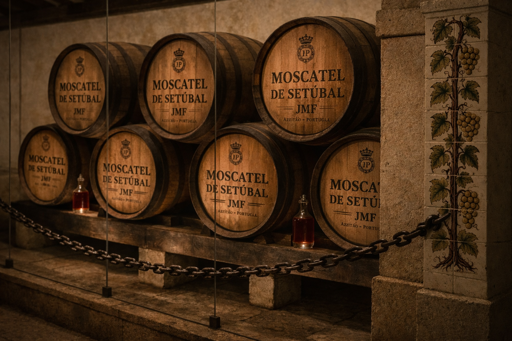

The BLU Store
Objects with origin.
Editions with a story.
A future selection of Portugal-made objects, books and small editions—chosen with the same point of view as our journeys.
In preparation
The store is not open yet.
For this private prototype, the navigation and visual direction are in place. Products and commerce will only be added after a separate review and approval.
Explore Portugal in the meantime ↗